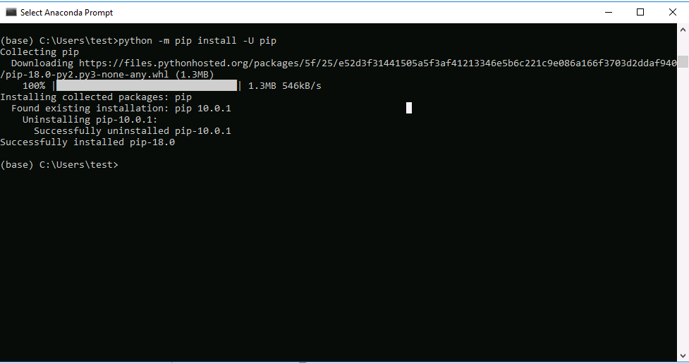
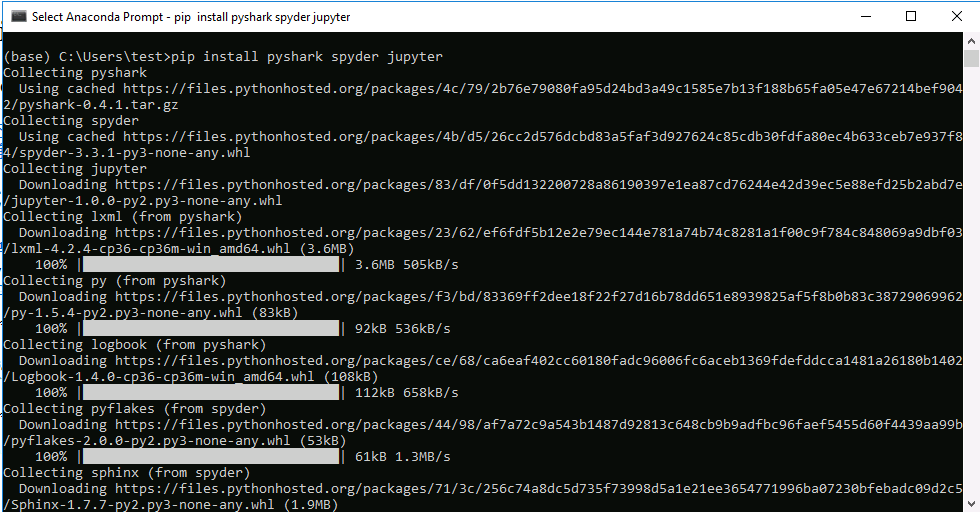

在Windows上安装miniconda
目录
Miniconda 是 Anaconda 的精简发行版。Anaconda本身分为 Anaconda 2 和Anaconda 3 系列，分别提供对 python 2.x 语言 和 python 3.x 语言的支持。本门课使用 Anaconda 3（Miniconda 3）以及相关的工具库进行网络数据包分析工具。
1 下载 Miniconda3
从 https://mirrors.tuna.tsinghua.edu.cn/anaconda/miniconda/ 下载Miniconda3 。依据你的操作系统是64位还是32位的Windows，下载对应的版本。如果操作系统是64位的Windows，下载https://mirrors.tuna.tsinghua.edu.cn/anaconda/miniconda/Miniconda3-latest-Windows-x86_64.exe；如果操作系统是32位的Windows，下载https://mirrors.tuna.tsinghua.edu.cn/anaconda/miniconda/Miniconda3-latest-Windows-x86.exe。
下面的命令会以在64位Windows上安装Miniconda3-latest-Windows-x86_64.exe 为例。在32位的情况下，请对命令里的参数作相应替换。
当然，也可以选择安装完整版的Anaconda3。完整版的Anaconda3从https://mirrors.tuna.tsinghua.edu.cn/anaconda/archive/ 下载。相应地，需要替换后续命令里的部分参数。
2 安装 Miniconda 3
当然，可以双击 Miniconda3-latest-Windows-x86_64.exe 直接安装，所有配置选项采用默认设置。也可以用下面的方法安装。
2.1 静默安装 Miniconda 3
把下列命令复制到记事本（或者你钟爱的编辑器）里，另存为Miniconda3-latest-Windows-x86_64.exe 所在的目录里的install_miniconda3.bat 文件。
start /wait "" Miniconda3-latest-Windows-x86_64.exe ^
/InstallationType=JustMe ^
/RegisterPython=0 /S ^
/D=%UserProfile%\Miniconda3
然后双击 install_miniconda3.bat ，等待执行完成，Miniconda3 会被安装在%UserProfile%\Miniconda3 （默认情况下，会在 C:\Users\<你的用户名>\Miniconda3 ）目录里。
3 设置python软件包更新源的镜像
用文本编辑器（比如notepad）编辑 %APPDATA%\pip\pip.ini 文件，在里面顶格输入下面三行配置并保存（请务必注意配置文件的后缀名，必须是.ini，不能是.ini.txt或者.txt）：
[global] trusted-host=pypi.tuna.tsinghua.edu.cn index-url=https://pypi.tuna.tsinghua.edu.cn/simple
采用国内的python软件包更新源镜像，通常会提升软件包的下载速率。
4 设置Anaconda的源
同样地，也是为了后续使用conda命令时能够比较快地下载软件包，在开始菜单里找到 Anaconda3 ，点击 Anaconda Prompt ，然后在出来的cmd命令行窗口里输入下列命令并回车：
conda config --add channels 'https://mirrors.tuna.tsinghua.edu.cn/anaconda/pkgs/free/' conda config --set show_channel_urls yes # 看看当前的 config 是什么样的 conda config --show
好了，这样可以开心的下载东西了。
4.1 如何删除添加的源呢？
这一步Just for your information，目前没有必要执行。
conda config --remove channels 'https://mirrors.tuna.tsinghua.edu.cn/anaconda/pkgs/free/'
5 更新pip
在开始菜单里找到 Anaconda3 ，点击 Anaconda Prompt ，然后在出来的cmd命令行窗口里输入下列命令并回车：
python -m pip install -U pip

图1 更新pip
注意看cmd命令行窗口是否输出了红色和黄色的错误和警告信息。如果有，则表明用pip安装/更新软件包出错（下同）。
6 安装分析wireshark数据包文件所需的工具库
在开始菜单里找到 Anaconda3 ，点击 Anaconda Prompt ，然后在出来的cmd命令行窗口里输入下列命令并回车：
pip install pyshark spyder jupyter
不出意外的话会看到：

图2 安装分析wireshark数据包文件所需工具库